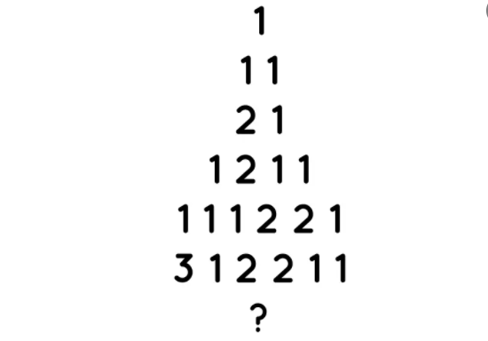
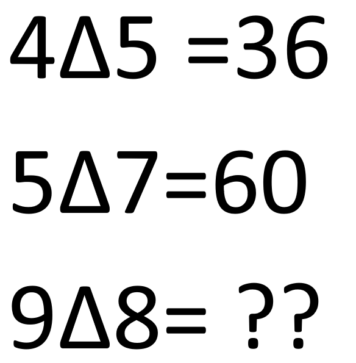
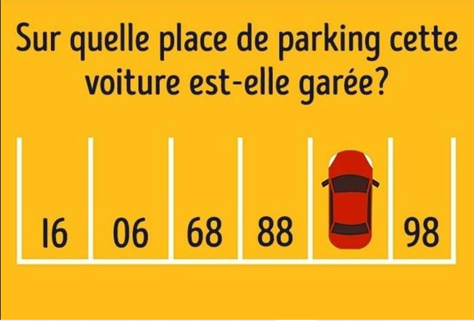

Il aurait été jaloux de ne pas avoir été choisi pour le voyage à Zermatt en 2024 et airait tout fait pour y aller en 2025. Aurait-il voulu se venger ?
Nous avons essayé d'enquêter sur lui et voilà les informations que nous avons
Enigme 1
Une vidéo a été retrouvée sur une ancienne clé USB portant une étiquette :
« Pour ceux qui cherchent à comprendre. »
Regardez-la attentivement… elle pourrait vous mener à un lieu du parc où tout a commencé.
Une fois sur place, cherchez un mot écrit quelque part. Ce mot est la clé pour ouvrir le cadenas ci-dessous :
Enigme 1 Résolu
Enigme 2
Grâce à l’analyse du banc sur lequel il s’asseyait souvent, les enquêteurs ont trouvé un vieux carnet oublié, recouvert de gribouillis.
Parmi eux : des croquis de personnages, des citations en japonais, et surtout une liste de noms familiers pour tout amateur de manga.
Il ne s’agissait plus d’un doute : le professeur était passionné de mangas psychologiques. Parmi les titres griffonnés :
Monster, Death Note, Erased... Mais un manga revenait encore et encore dans ses notes : Naruto.
L’un des assistants de l’enquête a obtenu l’autorisation de fouiller sa bibliothèque. C’est là, entre deux volumes, que quelque chose
d’étrange est apparu. Une feuille glissée dans le tome 18 de Naruto. Sur cette feuille, une image, codée :

À vous de résoudre l’énigme... mais il faudra réfléchir.
Enigme 1 Résolu
Enigme 2 Résolu
Enigme 3

Enigme 1 Résolu
Enigme 2 Résolu
Enigme 3 Résolu
Enigme 4
En interrogeant un ancien collègue de Mme ***, les enquêteurs ont appris une chose curieuse : elle se rendait parfois seule au Parc de la Grange… mais en voiture. Toujours discrète, elle se garait loin de l'entrée, du côté des places numérotées.
Un témoin affirme avoir vu son véhicule un matin, mais ne se souvient plus du numéro exact. Pourtant, un cliché du parking a été retrouvé dans la mémoire d’un vieux téléphone abandonné dans la salle des maîtres.
Voici la photo. Regardez-la bien : elle pourrait vous dire sur quelle place la voiture était garée. Saurez-vous retrouver le bon numéro ?

Enigme 1 Résolu
Enigme 2 Résolu
Enigme 3 Résolu
Enigme 4 Résolu
Fin de l'enquete sur le suspect
Nous avons toutes les informations qu'il faut.. nous devons regarder d'autre suspect